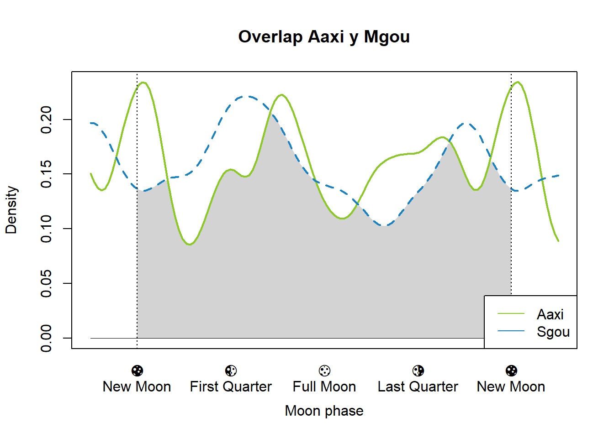
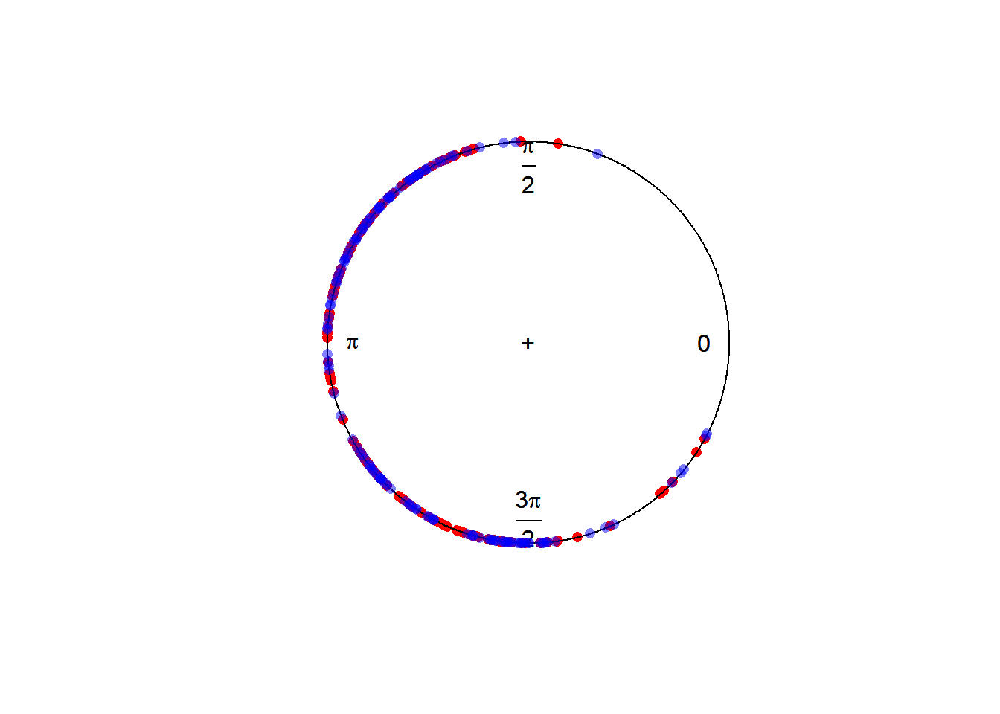
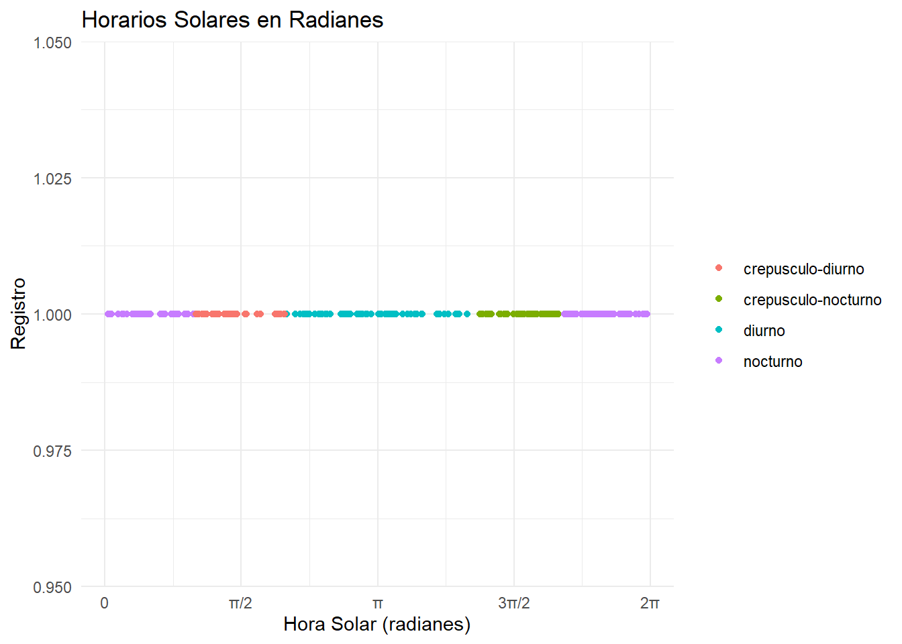
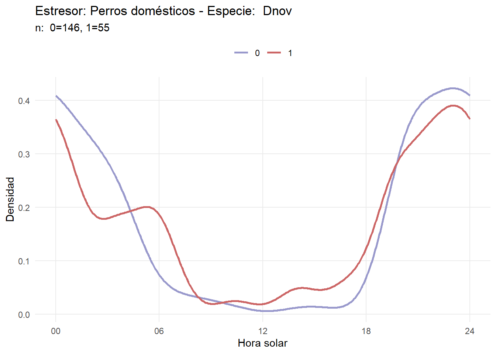
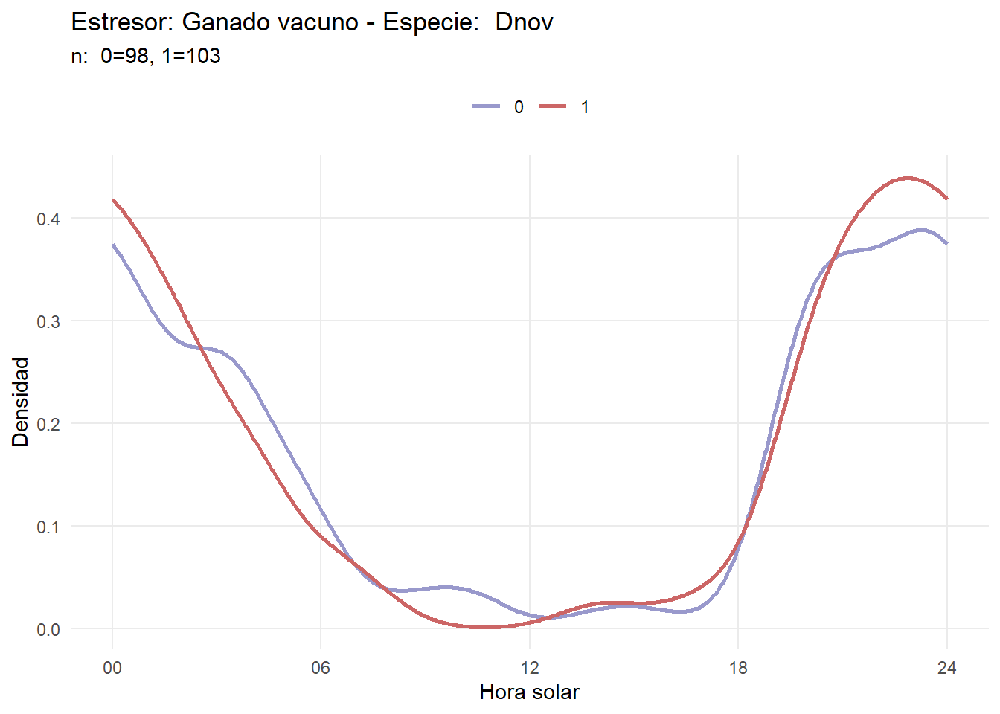
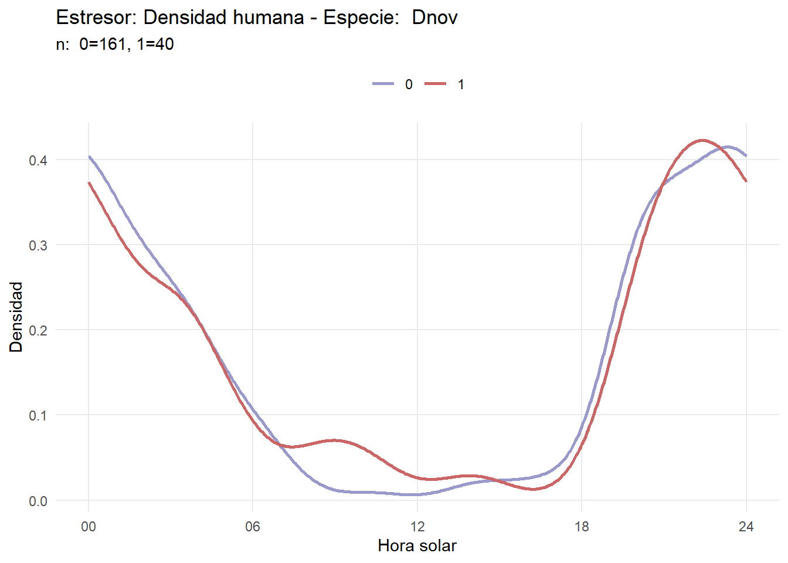
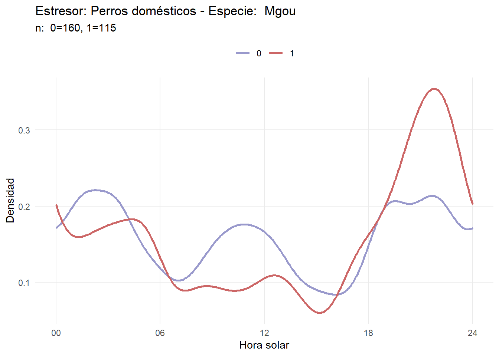

Parte 6 Densidad de kernel
También se puede ajustar funciones de densidad kernel no paramétricas utilizando el paquete de R overlap.
Para el primer caso:
densityPlot(tmp1$moon_phase,
extend = 'lightgrey',
lwd=3,
xaxt = "n",
xscale=NA,
xlab = "Moon phase",
main = paste(tmp1$sp[1], "y", tmp2$sp[1]),
col = "#1982c4"
)
axis(1, at = seq(0, 2 * pi, pi /2), labels = FALSE)
mtext(side = 1, at = seq(0, 2 * pi, pi /2), text = c("🌑\nNew Moon", "🌓\nFirst Quarter", "🌕\nFull Moon", "🌗\nLast Quarter", "🌑\nNew Moon"), padj = 1)
Y para el segundo:
densityPlot(tmp2$moon_phase,
extend = 'lightgrey',
lwd=3,
xaxt = "n",
xscale=NA,
xlab = "Moon phase",
col = "#8ac926")
axis(1, at = seq(0, 2 * pi, pi /2), labels = FALSE)
mtext(side = 1, at = seq(0, 2 * pi, pi /2), text = c("🌑\nNew Moon", "🌓\nFirst Quarter", "🌕\nFull Moon", "🌗\nLast Quarter", "🌑\nNew Moon"), padj = 1)
También se puede hacer un overlap:
overlapPlot(tmp1$moon_phase,
tmp2$moon_phase,
xscale=NA,
linewidth = c(2,2),
linecol = c("#8ac926", "#1982c4"),
xaxt = "n",
main = paste("Overlap", tmp1$sp[1], "y", tmp2$sp[1]),
xlab = "Moon phase",
extend = 'white')
mtext(side = 1, at = seq(0, 2 * pi, pi /2), text = c("🌑\nNew Moon", "🌓\nFirst Quarter", "🌕\nFull Moon", "🌗\nLast Quarter", "🌑\nNew Moon"), padj = 1)
abline(v=c(0, 2*pi), lty=3)
Y se obtienen los valores de estimación de overlap, demostrando una alta superposición en las curvas de densidad y por lo tanto, una mayor similitud en su actividad.
## Dhat1 Dhat4 Dhat5
## 0.9035792 0.9064397 0.9001743species_pairs <- list(c("Ctho", "Lgym"), c("Aaxi", "Mgou"), c("Dnov", "Dsep"), c("Lgeo", "Lwie"))
# Bucle para generar los gráficos
for (pair in species_pairs) {
# Filtrar los datos para cada especie en el par
tmp1 <- data[data$sp == pair[1], ]
tmp2 <- data[data$sp == pair[2], ]
# Contar el número de registros de cada especie
n1 <- nrow(tmp1)
n2 <- nrow(tmp2)
# Crear el gráfico de superposición
overlapPlot(tmp1$moon_phase,
tmp2$moon_phase,
xscale=NA,
linewidth = c(2,2),
linecol = c("#8ac926", "#1982c4"),
xaxt = "n",
main = paste("Overlap", pair[1], "(", n1, ")", " y ", pair[2], "(", n2, ")"),
xlab = "Moon phase",
extend = 'white')
# Personalizar los ejes y agregar líneas verticales
mtext(side = 1, at = seq(0, 2 * pi, pi / 2), text = c("🌑\nNew Moon", "🌓\nFirst Quarter", "🌕\nFull Moon", "🌗\nLast Quarter", "🌑\nNew Moon"), padj = 1)
abline(v = c(0, 2 * pi), lty = 3)
}
i = "Aaxi"
tmp <- datos %>%
filter(sp == i) %>%
pull(moon_phase)
x <- circular(tmp, units = "radians")
res25 <- density(x, bw=25, control.circular=list(units="radians"))
par(mar=c(0,0,1,0))
res = plot(res25, main = "", tol = 0.2, xaxt='n')
rose.diag(x, bins = 24, add = TRUE, ticks = FALSE, col="#00FF99", lty=1, border = "grey")
arrows.circular(mean(x), lwd = 2, length = 0.15, col = "#458B00")
points(x, stack=TRUE, cex = 0.4, sep = 0.05, bins = 128)
axis.circular(at = circular(c(0, pi/2, (3*pi)/2, pi), units = "radians"), labels = c("🌑", "🌓", "🌕", "🌗"), cex = 1.5, tcl.text = 0.2)